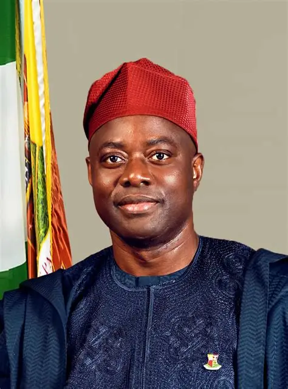

2015
FIRST CONTEST
Oyo State Governorship Election
Makinde first contested the Oyo State governorship election under the Social Democratic Party (SDP).
SEYI MAKINDE
A Nigerian engineer, businessman and politician from Ibadan, Oyo State, with experience in engineering, energy infrastructure and public administration.

ABOUT SEYI MAKINDE
A profile of his early life, education and professional development.
Oluseyi Abiodun Makinde was born on 25 December 1967 in Ibadan, Oyo State, Nigeria, to Pa Olatubosun Makinde and Abigail Makinde.
He attended St. Paul Primary School and St. Michael’s Primary School in Yemetu, Ibadan, before completing his secondary education at Bishop Phillips Academy, Ibadan.
His early education in Ibadan was followed by university studies in engineering and further professional training.
Bachelor of Science in Electrical Engineering, University of Lagos.
1990Further professional training included programmes in Houston, Lagos Business School, Kent, England, and MIT, USA.
PROFESSIONAL CAREER
A professional journey spanning engineering, energy, technical services and business leadership.
During his NYSC period, Makinde served with Shell Petroleum Development Company and subsequently worked as a pupil engineer.
He joined Rebold International Limited, where he worked as a Field Engineer and later progressed to the position of Field Manager.
At the age of 29, Makinde founded Makon Engineering and Technical Services (METS), beginning a major chapter in his entrepreneurial career.
He has served as Group Managing Director of Makon Group, with activities spanning oil and gas, power and energy infrastructure.
POLITICAL JOURNEY
Selected milestones from Seyi Makinde’s political career and public service.
Makinde first contested the Oyo State governorship election under the Social Democratic Party (SDP).
He contested the Oyo State governorship election under the Peoples Democratic Party (PDP) and was elected Governor of Oyo State on 9 March 2019.
Makinde was re-elected as Governor of Oyo State in the 2023 governorship election and began a second term in office.
According to the information provided, Makinde has declared his intention to seek the presidency of Nigeria under the Allied Peoples’ Movement (APM).
GOVERNANCE & PUBLIC SERVICE
Areas associated with Seyi Makinde’s record and public administration in Oyo State.
Education has been identified as one of the areas of focus associated with Makinde’s administration in Oyo State.
Healthcare and public health services have formed part of the areas associated with his governance record.
Security is another area identified in descriptions of the administration’s public-service priorities.
Agribusiness and agricultural development are among the areas associated with the administration.
Infrastructure development is also identified as an area of public administration.
His professional background also includes engineering, oil and gas, power and energy infrastructure.
ACHIEVEMENTS & MILESTONES
Selected milestones from Makinde’s professional and public-service journey.
Founded Makon Engineering and Technical Services, beginning an entrepreneurial journey in technical and energy-related services.
Elected Governor of Oyo State following the 9 March 2019 governorship election.
Re-elected as Governor of Oyo State for a second term.
The information provided reports a significant increase in Oyo State’s internally generated revenue, reaching a 296% increase by December 2025.
Source attribution should be verified before publication.The website records 2026 as the current year and continues the profile through the present public-service period.
The information provided states that Makinde has declared his intention to seek the presidency of Nigeria under the Allied Peoples’ Movement (APM).
CONTACT & INFORMATION
For verified announcements, public statements and official updates, use the appropriate official channels.